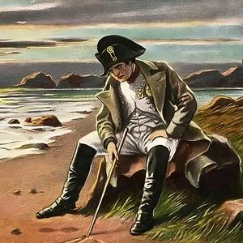

Resumão Napoleão Bonaparte
História - prova amanhã
Consulado(1799-1804)
Golpe de 18 Brumário
Código Napoleônico:
- •Igualdade perante a lei
- •Direito de propriedade
- •Proibição de sindicatos e greves
- •Retorno da escravidão nas colônias
Estado assume educação
Usa plebiscitos → Acumula poder → Vira imperador
Império (1804–1815)
Napoleão se autoproclama Imperador (1804)
Guerras Napoleônicas:
- •Expansão dos ideais revolucionários
- •Inimigos: Inglaterra, Áustria, Prússia, Rússia
- •Fim do Sacro Império Romano-Germânico
Bloqueio Continental (1806):
Ninguém negocia com a Inglaterra!
Efeitos:
- • Portugal desobedece → Família real foge pro Brasil
- • Espanha: José Bonaparte assume, colônias iniciam independência
- • Rússia usa tática de terra arrasada → Napoleão se lasca
Queda e Fim
Invasão da Rússia, um erro fatal
Exilado em Elba
Volta → Governo dos 100 Dias (1815)
Derrota final: Batalha de Waterloo
Preso em Santa Helena
Morre em 1821
